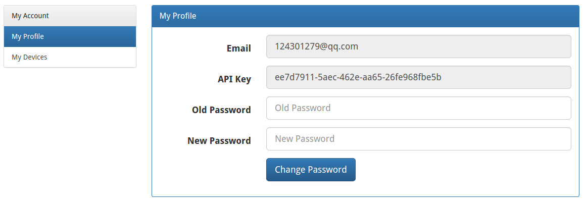
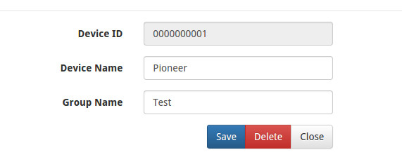

<div class="guide row">

  <div class="col-sm-9">
    <h1 id="user-guide">使用指南</h1>

    <h3 id="diy-register">
      1. 注册一个帐号并获取 API Key
    </h3>
    <p></p>

    <h3 id="diy-device-add">2. 在你的帐户里创建一个设备</h3>
    <p>给这个设备起个名字, 并把它放到一个你自己定义的设备组里。 </p>

    <h3 id="diy-deviceid">3. 记下你的设备 ID</h3>
    <p></p>

    <h3 id="coding">4. 在硬件终端那里写点 Python 代码</h3>
    <p>http 方式向海隽云报数据 </p>
    <pre><code>
import json
import urllib2

def hidrun_http_update():
    url = 'http://114.215.119.6/api/http'
    values = {"apikey": "ee7d7911-5aec-462e-aa65-26fe968fbe5b" , "deviceid": "0000000001", "action": "update", "params":{"stove": "on"}}
    params = json.dumps(values)
    headers = {"Content-type":"application/json","Accept": "application/json"}
    req = urllib2.Request(url, params, headers)
    response = urllib2.urlopen(req)
    print response.read()

if __name__ == "__main__":
    hidrun_http_update() 
    </code></pre>
    <p>http 方式从海隽云获取数据</p>
    <pre><code>
import json
import urllib2

def hidrun_http_query():
    url = 'http://114.215.119.6/api/http'
    values = {"apikey": "ee7d7911-5aec-462e-aa65-26fe968fbe5b" , "deviceid": "0000000001", "action": "query", "params":[]}
    params = json.dumps(values)
    headers = {"Content-type":"application/json","Accept": "application/json"}
    req = urllib2.Request(url, params, headers)
    response = urllib2.urlopen(req)
    print response.read()

if __name__ == "__main__":
    hidrun_http_query() 
</code></pre>
    <p>websocket 方式向海隽云报数据</p>
    <pre><code>
from websocket import create_connection
import json

ws = create_connection("ws://114.215.119.6/api/ws")
print "Sending params..."
values = {"apikey": "ee7d7911-5aec-462e-aa65-26fe968fbe5b" , "deviceid": "0000000001", "action": "update", "params":{"airConditioner": "on"}} 
params = json.dumps(values)
ws.send(params)
print "Sent"
print "Receiving..."
result =  ws.recv()
print "Received '%s'" % result
ws.close() 
    </code></pre>
    <p>一个一直运行的 websocket 客户端</p>
    <pre><code>
import websocket
import threading
import time
import json

class Updater(threading.Thread): 
    def __init__(self, ws):
        threading.Thread.__init__(self)
        self.ws = ws
    def run(self):
        time.sleep(5)
        values = {"apikey": "ee7d7911-5aec-462e-aa65-26fe968fbe5b" , "deviceid": "0000000001", "action": "query", "params":[]} 
        params = json.dumps(values)
        print "What I have?"
        self.ws.send(params)
        time.sleep(10)
        values = {"apikey": "ee7d7911-5aec-462e-aa65-26fe968fbe5b" , "deviceid": "0000000001", "action": "update", "params":{"light":"off"}} 
        params = json.dumps(values)
        print "Save some light!"
        self.ws.send(params)
 
def on_message(ws, message):
    print message
    jsonobj = json.loads(message)
    if  "command" in jsonobj.keys() or "action" in jsonobj.keys():
        response = {"error":0,"apikey":"ee7d7911-5aec-462e-aa65-26fe968fbe5b","deviceid":"0000000001"}
        params = json.dumps(response)
        ws.send(params)

def on_error(ws, error):
    print error
 
def on_close(ws):
    print "### closed ###"

def on_open(ws):
    values = {"apikey": "ee7d7911-5aec-462e-aa65-26fe968fbe5b" , "deviceid": "0000000001", "action": "register"} 
    params = json.dumps(values)
    ws.send(params)
    print "I am alive ! (from device)"
    worker = Updater(ws)
    worker.setDaemon(True)
    worker.start()
   
    
 
if __name__ == "__main__":
    websocket.enableTrace(True)
    ws = websocket.WebSocketApp("ws://114.215.119.6/api/ws",
                              on_message = on_message,
                              on_error = on_error,
                              on_close = on_close)
    ws.on_open = on_open
    ws.run_forever()
         
    </code></pre>

  </div>

</div>
